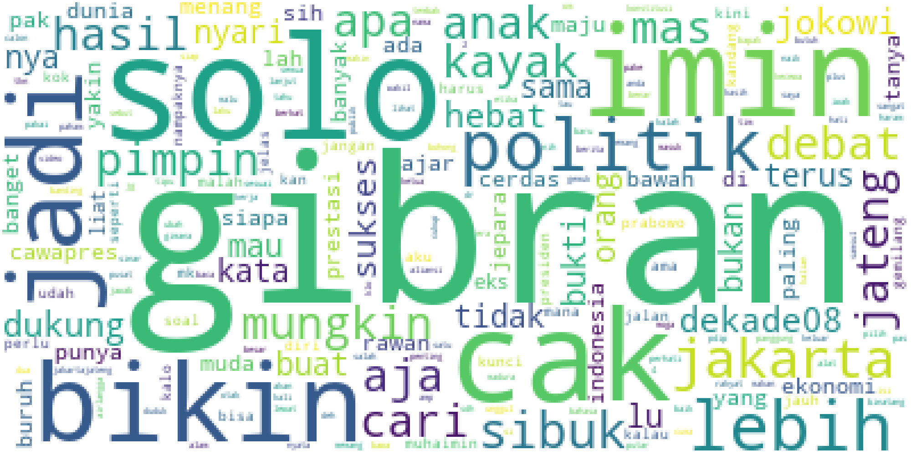

PENGUKUR SENTIMEN PEMILIHAN PRESIDEN 2024
Home
Analisis
Hasil Analisis
Persentase Sentimen Pada File {{filename}}
{{positif}}% positif
{{netral}}% netral
{{negatif}}% negatif

Kata Terbanyak yang Muncul
Kata
Jumlah
{% for x in freq %}
{{ x }}
{{ freq[x] }} kata
{% endfor %}